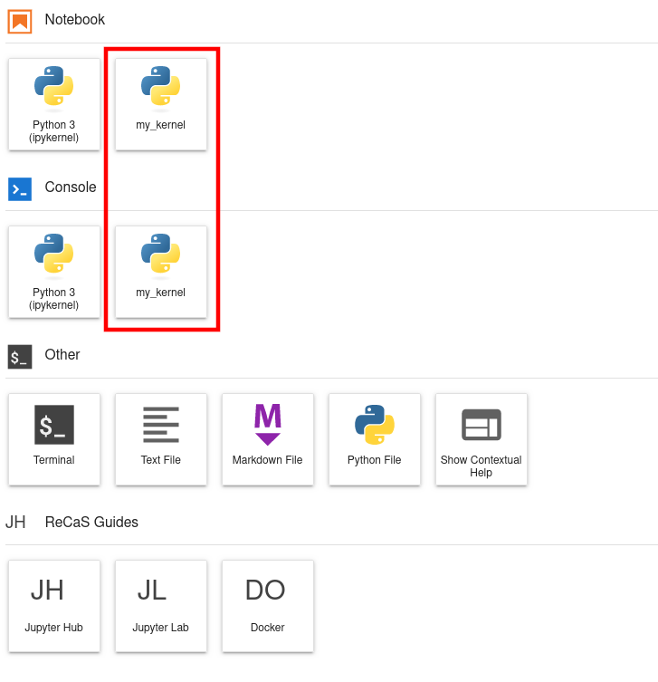
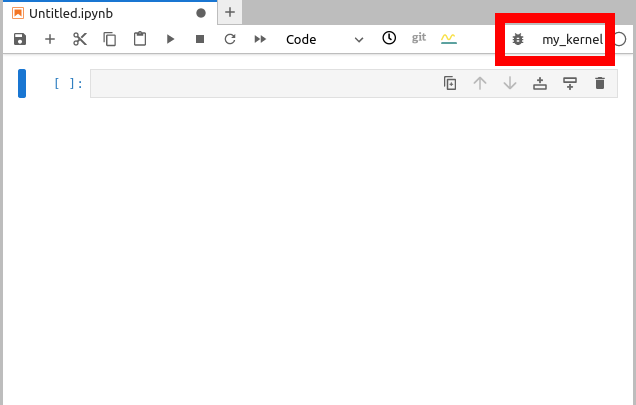
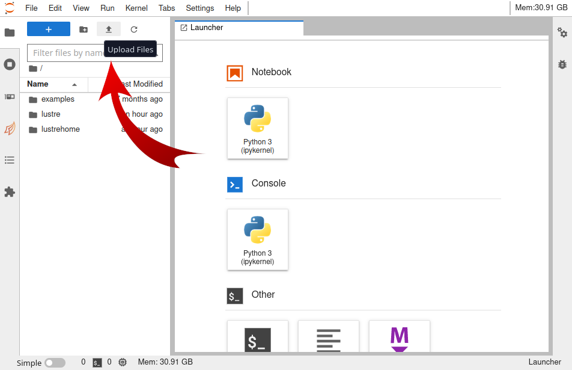
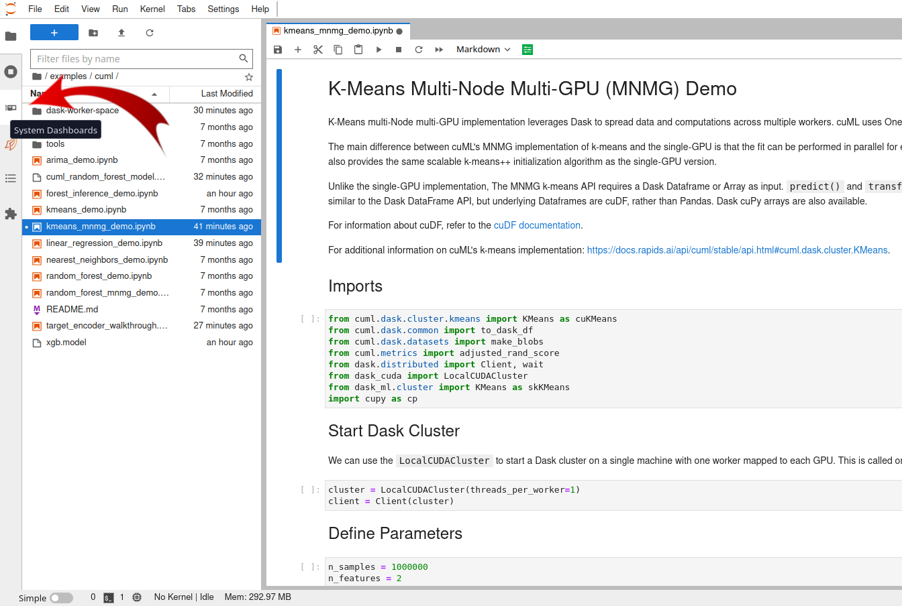
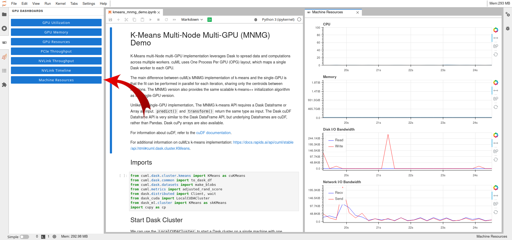
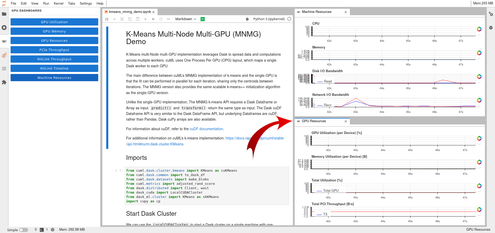
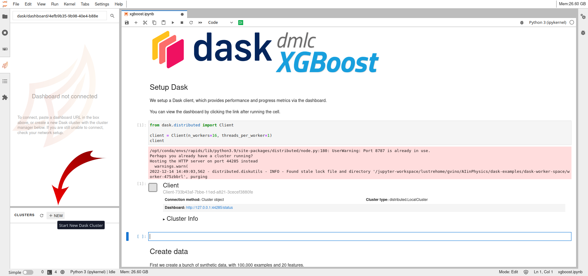
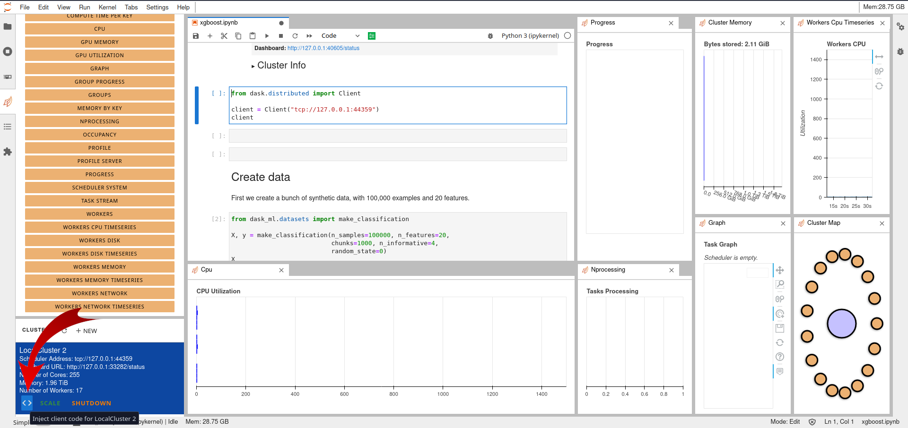
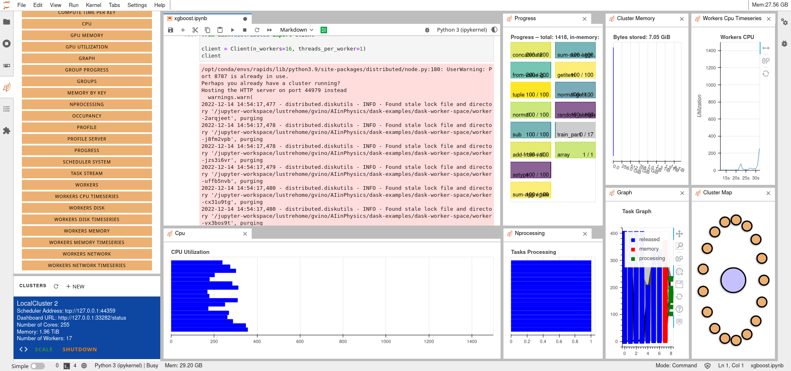

Jupyter Lab Guide¶
Updated on 19 May 2025
0 User Support¶
If you need support for your application, please use this link to create ag ticket titled “ReCaS HPC/GPU: JupyterLab support” and describe your issue.
Please provide all the necessary information to help us resolve your issue more easily, such as the notebook absolute path, screenshots, and so on.
It is STRONGLY advised to subscribe to the recas-hpu-gpu mailing list. Create a ticket with the title “ReCaS HPC/GPU: subscribe to the mailing list”.
1 Introduction¶
JupyterLab is an open-source web application that allows you to create and share documents that contain live code, equations, visualizations, and narrative text. Uses include: data cleaning and transformation, numerical simulation, statistical modelling, data visualization, machine learning, and much more.
The ReCaS JupyterLab can access your files and directories stored in the ReCaS-Bari storage (based on the GPFS distributed file system) and use high-performance GPUs to speed up the execution of your application.
2 JupyterLab Launcher¶
This is the latest launcher version, implemented in the ReCaS-Bari JupyterHub.

2.1 Jupyter Kernels¶
The first two rows show all the available kernels in your JupyterLab instance.
Initially, you will find only the Python 3 kernel.
R kernel¶
To install the R kernel, please execute the following command:
conda create --name r_kernel -c r r-irkernel r-essentials r-recommended -y
conda activate r_kernel`
Root kernel¶
To install the ROOT kernel, please execute the following command:
conda create -c conda-forge --name root_kernel root ipykernel -y
Some issues related to the Python bindings are known.
You can use ROOT in interactive mode using the Terminal, after activating the conda environment with the following command:
conda activate root_kernel
2.2 Utilities¶
The third row contains several utilities, such as Terminal (you can use it to execute bash commands in the Bash shell), and text, Markdown, Python, and R file editors.
2.3 ReCaS-Bari Services Guides¶
In the bottom rows, you will find links to guides for all ReCaS-Bari GPU cluster services.
3 Installing new Python modules¶
3.1 pip¶
pip can be used to install new Python packages.
Specific lines can be put inside the code, like followings:
# Installation
%pip install graphviz
# Import
import graphviz
Warning
Remember to put a % before the pip install command: in this way the python module is directly available in the kernel. Otherwise restart the kernel to use the installed packages.
There is a drawback to use pip install: when your JupyterLab instance is restarted, you will lose all installed Python packages.
3.2 conda¶
Alternately you can use also conda and install packages using the Terminal. To use the terminal in JupyterLab, open a new tab and select Terminal from the launcher.
The following lines show how to install pandas package in a new conda environment :
conda create --name my_kernel pandas=2 -y
conda activate my_kernel
After the second command, you will notice appearing the (my_kernel) in the shell.
To test the installation, execute the following command
python -c 'import pandas; print(pandas.__version__)'
Conda will install the Python modules you need for your code/project in your Home directory in /lustrehome, enabling multiple advantages:
-
Your conda environment is always available even if your JupyterLab instance (also known as a container) is stopped or restarted.
-
You can create a new Jupyter kernel, allowing a notebook to be executed within a specific conda environment.
-
It is the first step to submit a notebook to the GPU cluster for batch execution.
Note
Consider mamba instead of conda.
3.2.1 Troubleshooting¶
conda init¶
If conda shows you an "conda init" error, execute the command conda init and then execute the command:
source /lustrehome/<username>/.bashrc
base conda environment¶
You cannot install python packages in the base conda environment, you have to create a new one as described above
3.2.2 Create new Jupyter kernel¶
Starting from a conda environment it is possible to create a Jupyter kernel: this will make easier to execute a given notebook using a particular conda environment.
Following some commands to create a conda environment and how to create a jupyter kernel linked to it:
conda create --name my_kernel -c conda-forge pandas=2 ipykernel -y
conda activate my_kernel
python -m ipykernel install --name my_kernel --user --display-name my_kernel
Remind to reload the browser in order to see your new kernel in the Jupyter launcher.

Once the kernel appears in the launcher, it is possible to select it inside the notebook, as shown in the following image.

4 Upload file from local file system¶
To upload files from your local file system to the JupyterLab workspace, press the button shown in the following figure and select the files to would like to upload.

5 Enable Resource Usage Dashboards¶
The ReCaS JupyterLab allows you to monitor the resource usage of your application in real-time.
A few simple steps are needed to create your personal dashboard.
First, click the third tab on the left, named "System Dashboards", as shown in the figure below.

Second, double-click the desired blue button, and it will be placed as a tab near the notebook tab. Drag and move it to select your preferred position.
The following figure shows the "Machine Resources" plots.

Additional plots can be displayed on the screen.
The following figure also shows the "GPU Resources" plots.

6 Dask¶
Dask is a flexible open-source Python library for parallel computing. Dask scales Python code from multi-core local machines to large distributed clusters in the cloud. Dask provides a familiar user interface by mirroring the APIs of other libraries in the PyData ecosystem including: Pandas, Scikit-learn and NumPy. It also exposes low-level APIs that help programmers run custom algorithms in parallel. (Wikipedia)
Dask allows you to split the workload among multiple workers. So, the first step involves creating a cluster. Workers can be run on different machines or on the same machine.
6.1 Start a new Dask cluster¶
The easiest way to create a Dask cluster is through the following lines:
from dask.distributed import Client, LocalCluster
cluster = LocalCluster() # Launches a scheduler and workers locally
client = Client(cluster) # Connect to distributed cluster and override default
After that, computation on Dask DataFrames can be executed.
In the following line is shown the evaluation of the sum of the column x of the dataframe df.
df.x.sum().compute() # This now runs on the distributed system
It is recommended to read the official Dask guide to learn all provided capabilities.
6.2 Enable Dask Resource Usage Dashboards¶
Dash provides additional graphical objects to monitor in real-time application information like resource usage and application progress.
Firstly, the creation of a Dask cluster through the Jupyter Lab interface.
This is done by selecting the forth tabs on the left, the Dask Tab, and create a new cluster by clicking on the NEW button, as shown in the following figure.

Secondly, the importing of the created cluster in the code.
This is easily done by clicking the < > button on the bottom left after having selected the cell inside the notebook, as shown in the following figure.

Following it is copied the generated code for convenience.
from dask.distributed import Client
client = Client("tcp://127.0.0.1:44359")
client
Multiple Dask graphical objects can be enabled and moved inside the window.
If the code exploit Dask objects, during its execution the information about the application (resources usage, application progress, ...) are shown in real-time, as shown in the following figure.

7 Bash process management¶
Your JupyterLab instace is started on a Linux Operative System.
Learn how to interact with its Process management it is important to manage aspects of your application executions.
Please, take a look of the most important commands at this link
8 Execute a Jupyter Notebook in background with papermill¶
Papermill is a tool for parameterizing and executing Jupyter Notebooks.
Papermill lets you:
-
parameterize notebooks
-
execute notebooks
Papermill is already installed on your JupyterLab instance.
If you would like to use papermill also in your conda environment, please install it using the following command
conda install -c conda-forge papermill -y
Please task a look of the official documentation.